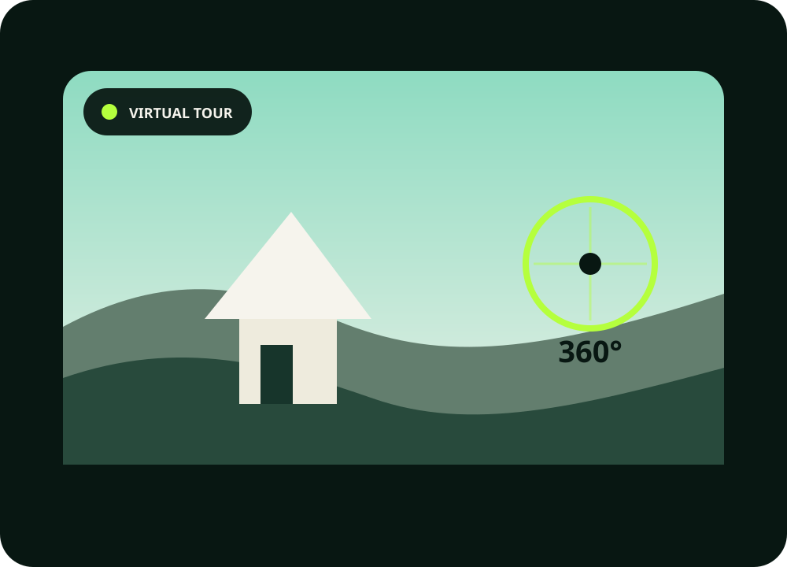

Räume digital zeigen. Technik greifbar machen.
360°-Rundgänge, CAD, 3D-Prototypen, IoT und technische Systemplanung – für Projekte, bei denen digitale Darstellung und reale Technik zusammenkommen.

Orte erleben, bevor man dort ist.
360°-Aufnahmen eignen sich für Unternehmen, Räume, Immobilien, Showrooms, Veranstaltungsflächen und technische Dokumentation.
- Aufnahmeplanung und Vor-Ort-Produktion
- Stitching, Bildbearbeitung und Qualitätskontrolle
- Navigation, Hotspots und Infopunkte
- Verlinkungen, Texte und Medien innerhalb der Tour
- Veröffentlichung und Website-Integration
Vom Modell zum funktionierenden Prototyp.
Für Halterungen, Gehäuse, Vorrichtungen, Bauteile und individuelle technische Ideen.
- CAD-Konstruktion und 3D-Modellierung
- Technische Zeichnungen und Anpassungen
- Druckgerechte Aufbereitung und Slicing
- 3D-Druck mit Standard- und Spezialmaterialien
- Nachbearbeitung, Montage und Iterationen

Kleine Systeme mit konkretem Nutzen.
Sensorik, Mikrocontroller und vernetzte Komponenten können Messwerte erfassen, Zustände melden oder Prozesse unterstützen.
ESP32 & Firmware
Programmierung, Sensorabfrage, Deep-Sleep-Konzepte, Logik und Kommunikation.
Sensorik & Datenerfassung
Auswahl, Integration und Auswertung geeigneter Sensoren und Signale.
Prototyp-Aufbau
Verdrahtung, Gehäuse, Stromversorgung, Funktionstest und Inbetriebnahme.
Planung, bevor Hardware gekauft wird.
Für Video-/Kamerasysteme planen wir Sichtfelder, Positionen, Höhen, Verkabelung und Komponenten auf Basis von Grundriss und Datenblättern.
Skizze, Grundriss oder Idee vorhanden?
Schicken Sie die Ausgangslage. Wir prüfen, welche Visualisierung, Konstruktion oder technische Lösung sinnvoll ist.